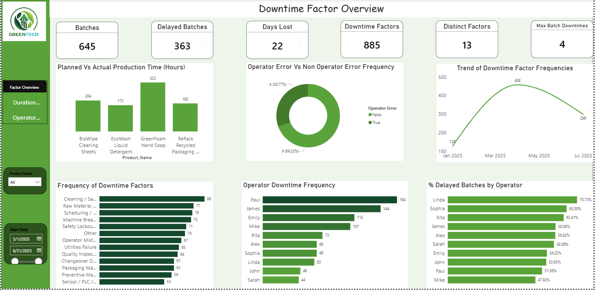
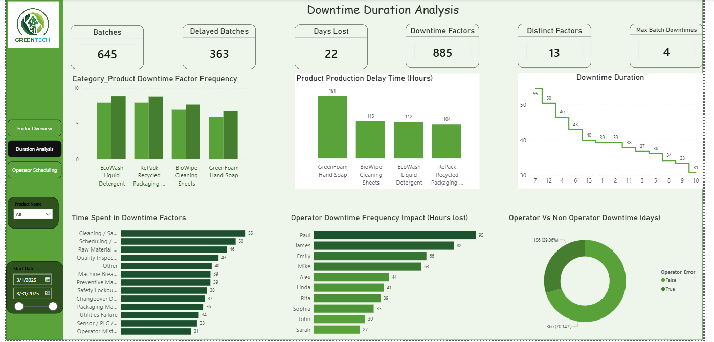
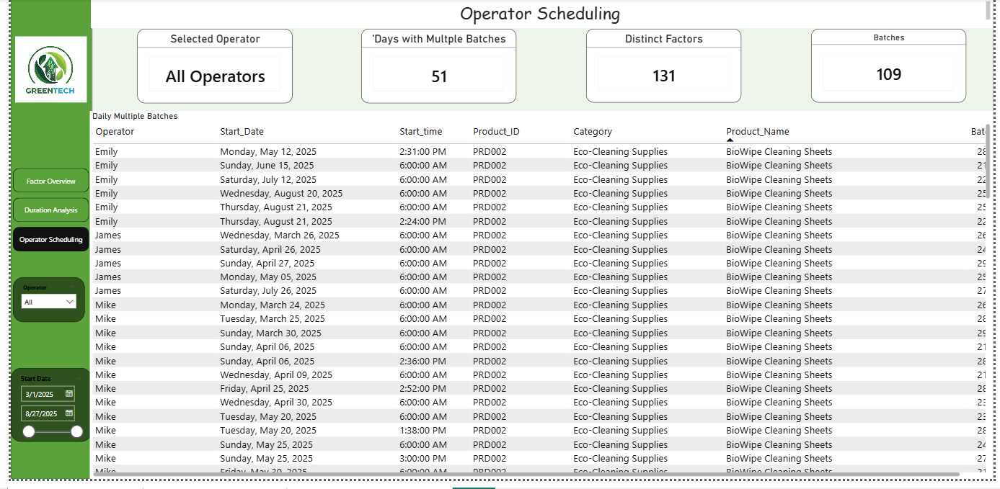
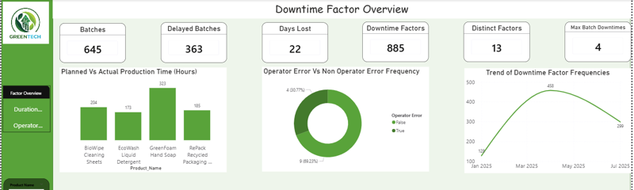

Data Analytics Case Study
GreenTech Manufacturing
Production downtime root cause analysis recovering roughly $800K in annual value




SQL ServerPower BIDAXPower QueryExcel
Objective
GreenTech was losing an estimated $1.5M annually to production downtime, with no visibility into whether operators, scheduling, or equipment reliability were driving the losses. After analyzing 645 production batches over a six month period, 56 percent of batches experienced delays, and operator-related issues accounted for nearly 70 percent of downtime events, the largest controllable factor. Scheduling conflicts occurred on 51 production days, and one production line alone accounted for 191 hours of lost production time.
What I Did
- Cleaned and transformed SQL data across 645 production batches and 885 downtime events
- Built a three-page interactive Power BI dashboard with DAX measures and KPI tracking
- Ran root cause, trend, and operator level downtime analysis across 13 downtime categories
- Reframed findings from individual blame toward process and scheduling improvements, and delivered a 180 day roadmap with six prioritized recommendations
Achievements
$800KProjected Recovery
56%Batches Delayed
70%Operator-Related Downtime
191 hrsLost, Top Line